-
一些测试
-
What is QR Code
A Quick Response code is a two-dimensional pictographic code used for its fast readability and
comparatively large storage capacity. The code consists of black modules arranged in a square
pattern on a white background. The information encoded can be made up of any kind of data
(e.g., binary, alphanumeric, or Kanji symbols)
http://www.qrcode.com/en/about/
QR Code Feature - High Capacity Encoding of Data
While conventional bar codes are capable of storing a maximum of approximately 20 digits, QR Code
is capable of handling several dozen to several hundred times more information.
QR Code is capable of handling all types of data, such as numeric and alphabetic characters, Kanji,
Kana, Hiragana, symbols, binary, and control codes. Up to 7,089 characters can be encoded in one symbol.
 QR Code Feature - Small Pintout Size
Since QR Code carries information both horizontally and vertically, QR Code is capable of encoding the
same amount of data in approximately one-tenth the space of a traditional barcode. (For a smaller printout
size, Micro QR Code is available.)
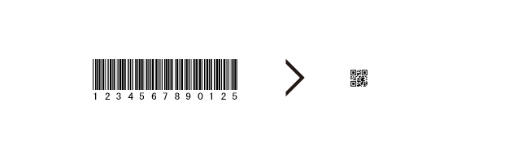
QR Code Feature - Kanji and Kana Capability
As a symbology developed in Japan, QR Code is capable of encoding JIS Level 1 and Level 2 kanji character set.
In case of Japanese, one full-width Kana or Kanji character is efficiently encoded in 13 bits, allowing QR Code
to hold more than 20% data than other 2D symbologies.
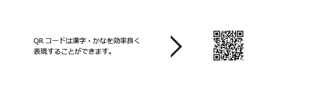
QR Code Feature - Dirt and Damage Resistant
QR Code has error correction capability. Data can be restored even if the symbol is partially dirty or damaged.
A maximum 30% of codewords can be restored.
A codeword is a unit that constructs the data area. In the case of QR Code, one codeword is equal to 8 bits.
Data restoration may not be fully performed depending on the amount of dirt or damage
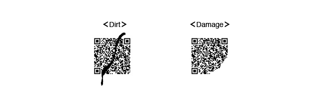
QR Code Feature - Readable from any direction in 360
QR Code is capable of 360 degree (omni-directional), high speed reading. QR Code accomplishes this task
through position detection patterns located at the three corners of the symbol. These position detection
patterns guarantee stable high-speed reading, circumventing the negative effects of background interference.
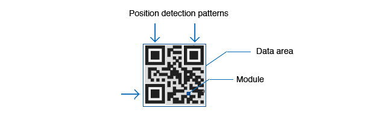
QR Code Feature - Structured Appending
QR Code can be divided into multiple data areas. Conversely, information stored in multiple QR Code
symbols can be reconstructed as a single data symbol. One data symbol can be divided into up to 16
symbols, allowing printing in a narrow area.
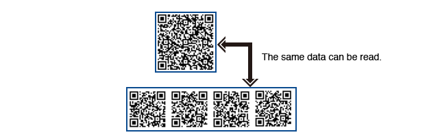
QR Code Feature - Small Pintout Size
Since QR Code carries information both horizontally and vertically, QR Code is capable of encoding the
same amount of data in approximately one-tenth the space of a traditional barcode. (For a smaller printout
size, Micro QR Code is available.)
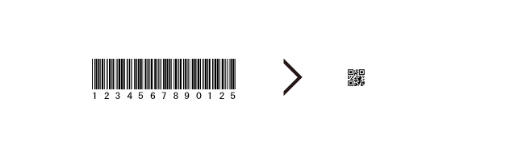
QR Code Feature - Kanji and Kana Capability
As a symbology developed in Japan, QR Code is capable of encoding JIS Level 1 and Level 2 kanji character set.
In case of Japanese, one full-width Kana or Kanji character is efficiently encoded in 13 bits, allowing QR Code
to hold more than 20% data than other 2D symbologies.
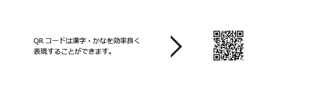
QR Code Feature - Dirt and Damage Resistant
QR Code has error correction capability. Data can be restored even if the symbol is partially dirty or damaged.
A maximum 30% of codewords can be restored.
A codeword is a unit that constructs the data area. In the case of QR Code, one codeword is equal to 8 bits.
Data restoration may not be fully performed depending on the amount of dirt or damage
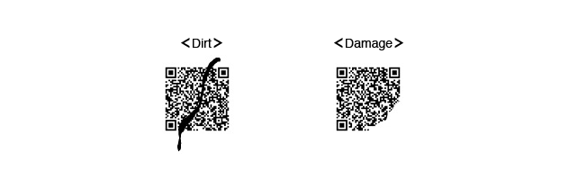
QR Code Feature - Readable from any direction in 360
QR Code is capable of 360 degree (omni-directional), high speed reading. QR Code accomplishes this task
through position detection patterns located at the three corners of the symbol. These position detection
patterns guarantee stable high-speed reading, circumventing the negative effects of background interference.
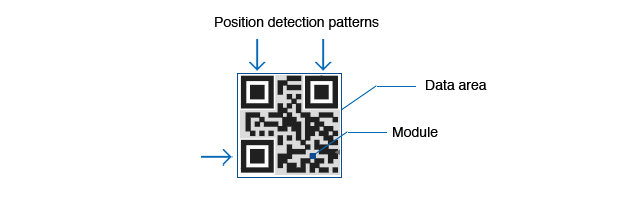
QR Code Feature - Structured Appending
QR Code can be divided into multiple data areas. Conversely, information stored in multiple QR Code
symbols can be reconstructed as a single data symbol. One data symbol can be divided into up to 16
symbols, allowing printing in a narrow area.
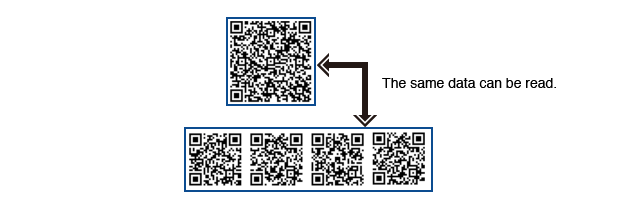
-
QR Code Types
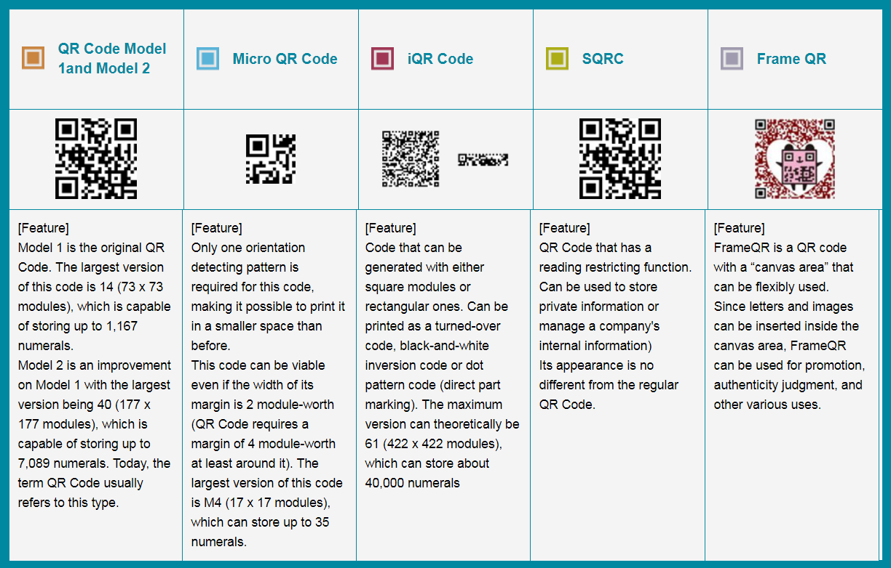
-
QR Code Outline Spec
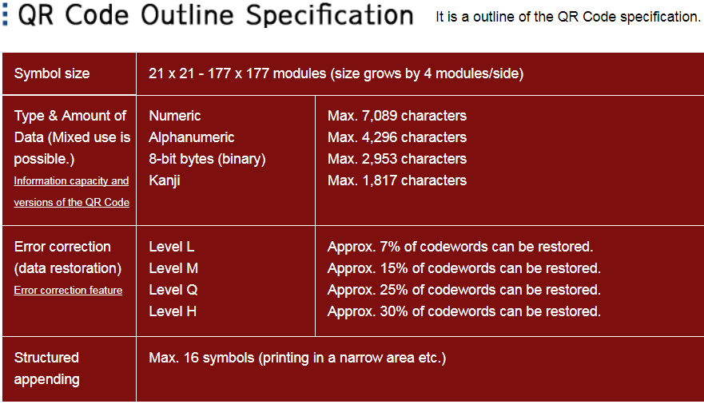
-
QR Code Versions
The symbol versions of QR Code range from Version 1 to Version 40. Each version has a different module
configuration or number of modules. (The module refers to the black and white dots that make up QR Code.)
"Module configuration" refers to the number of modules contained in a symbol, commencing with
Version 1 (21 × 21 modules) up to Version 40 (177 × 177 modules). Each higher version number comprises
4 additional modules per side.
How to determine the version of QR Code to be used?
Find the mapping on page http://www.qrcode.com/en/about/version.html
e.g. the data to be input consists of 100-digit numbers.
choose numeral as type of data. and find the closest number, which is 101 (should be > 100) in the table.
pick a correction level, e.g. M.
The version to be used is 3.
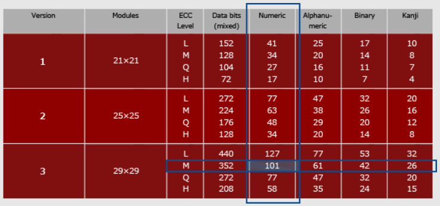
-
Usage
Pillow document: http://pillow.readthedocs.io/en/4.3.x/reference/Image.html
From the command line, use the installed qr script:
qr "Some text" > test.png
Or in Python, use the make shortcut function:
import qrcode
img = qrcode.make('Some data here')
img.save("c:\\test.png", "png") ==> "jpeg", "svg"...
-
Advanced Usage
For more control, use the QRCode class. For example:
import qrcode
qr = qrcode.QRCode(
version=1,
error_correction=qrcode.constants.ERROR_CORRECT_L,
box_size=10,
border=4,
)
qr.add_data('Some data')
qr.make(fit=True)
img = qr.make_image()
The version parameter is an integer from 1 to 40 that controls the size of the QR Code
(the smallest, version 1, is a 21x21 matrix). Set to None and use the fit parameter when making
the code to determine this automatically.
The error_correction parameter controls the error correction used for the QR Code. The following
four constants are made available on the qrcode package:
ERROR_CORRECT_L
About 7% or less errors can be corrected.
ERROR_CORRECT_M (default)
About 15% or less errors can be corrected.
ERROR_CORRECT_Q
About 25% or less errors can be corrected.
ERROR_CORRECT_H.
About 30% or less errors can be corrected.
The box_size parameter controls how many pixels each “box” of the QR code is.
The border parameter controls how many boxes thick the border should be (the default is 4, which is
the minimum according to the specs).